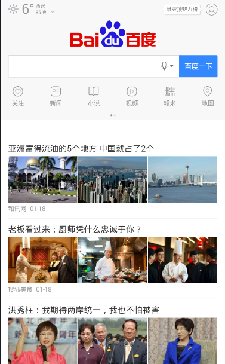
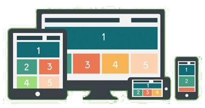
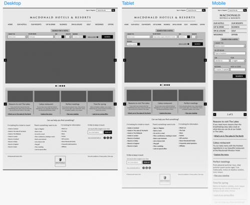

几个web app

2017-01-19
网络应用程序（简称 Webapp）是一种使用网页浏览器在互联网或企业内部网上操作的应用软件。是一种以网页语言（例如HTML、JavaScript、Java等编程语言）撰写的应用程序，需要通过浏览器来运行。
——《维基百科》
Webapp说白了就是一个针对Iphone、Android优化后的web站点，它使用的技术无非就是HTML或HTML5、CSS3、JavaScript，服务端技术JAVA、PHP、ASP。
| 平台 | 语言 | 代表 |
| Android | Html(3) | Android(google) Browser |
| iOS | css(3) | iOS safari |
| BlackBerry | Javascrpit | BlackBerry Webkit |
Native App：
Web App：
因为这些高端智能手机（Iphone、Android）的内置浏览器都是基于webkit内核的，所以在开发WEBAPP时，多数都是使 用 HTML5和CSS3技术做UI布局。
<meta content="width=device-width, initial-scale=1.0, maximum-scale=1.0,
user-scalable=0;" name="viewport" /><meta content="yes" name="apple-mobile-web-app-capable" /><meta content="black" name="apple-mobile-web-app-status-bar-style" /><meta content="telephone=no" name="format-detection" />
先认识下media query属性
@media screen and (min-width: 320px) and (max-width : 479px)
就从这个条件语句开始介绍，media属性后面跟着的是一个 screen 的媒体类型( 十种媒体类型之一)。然后用 and 关键字来连接条件（其他关键字还有 not， only，看字面大家能理解，就不多说。然后括号里就是一个媒体查询语句，稍微懂点css的同学都能看懂，这个条件语句意思是在大于320小于479 的分辨率下所激活的样式表。
有一种情况除外，就是高像素比的终端，比如 iphone4以上的retina屏，一个iphone5的小小的屏幕，他的分辨率竟然达到了1136*640，几乎等于 一个笔记本的分辨率
@media only screen and (min-device-pixel-ratio: 2)
就是判断终端的像素比是2的话，所渲染的样式。iphone4以上像素比是2，高分辨率Andriod设备像素比是1.5
第一步：确定需要兼容的设备类型、屏幕尺寸
通过用户研究，了解用户使用的设备分布情况，确定需要兼容的设备类型、屏幕尺寸。
设备类型：包括移动设备（手机、平板）和pc。对于移动设备，设计和实现的时候注意增加手势的功能。
屏幕尺寸：包括各种手机屏幕的尺寸（包括横向和竖向）、各种平板的尺寸（包括横向和竖向）、普通电脑屏幕和宽屏。
第二步：制作线框原型
针对确定下来的几个尺寸分别制作不同的线框原型，需要考虑清楚不同尺寸下，页面的布局如何变化，内容尺寸如何缩放，功能、内容的删减，甚至针对特殊的环境作特殊化的设计等。这个过程需要设计师和前端开发人员保持密切的沟通。 
第三步：测试线框原型
将图片导入到相应的设备进行一些简单的测试，可帮助我们尽早发现可访问性、可读性等方面存在的问题。
第四步：视觉设计
注意，移动设备的屏幕像素密度与传统电脑屏幕不一样，在设计的时候需要保证内容文字的可读性、控件可点击区域的面积等。
第五步：前端实现
与传统的web开发相比，响应式设计的页面由于页面布局、内容尺寸发生了变化，所以最终的产出更有可能与设计稿出入较大，需要前端开发人员和设计师多沟通。

现状：
目前iOS和Android系统的浏览器都是webkit核心的，我们可以开发移动Web应用来满足这块需求。iOS支持硬件加速，Android系统也能满足基本Webkit的API功能，适宜通过区分iOS来提供差异化服务。iOS的Mobile Safari有足够能力提供webkitTransForm（图形变换，3D变换支持硬件加速）、webkitTransition（CSS3动画）、SQLite、LocalStorage（离线存储）、 WebSocket（iOS 4.2+）服务。至于Android，因为需要兼容参差的低端设备，还是不建议使用复杂图形变换和CSS3动画，其它能力可以通过判断能否支持来选择使用。另外多点触摸、重力感应、地理位置还是根据能否支持和需要来使用，主要用于优化用户体验，不影响基本交互方式。
未来：
伴随着html5兴起是flash的没落，html5除了移动设备的跨平台性和较好的做媒体支持外，它的应用范围也广于flash，html5在近几年也会在以下四大方面有所突破。
微信小程序强势袭来...
Thanks for listening!